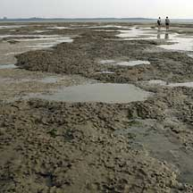
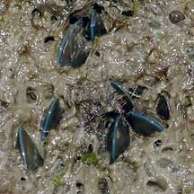

|
|
| bivalves text index | photo index |
| Phylum Mollusca > Class Bivalvia |
| Sea
mussels Family Mytilidae updated May 2020
Where seen? Mussels are common on many of our shores and mangroves, stuck to rocks, tree roots and other hard surfaces. Some create 'nests' out on the sand or mudflats. What are sea mussels? Sea mussels belong to the Family Mytilidae. Features: The two-part shell is generally tear-drop shaped (rounded at one end and pointed at the other). Although thin, the shell is quite strong. Instead of gluing down one valve to a rock like oysters do, mussels attach themselves with byssus threads. Sea mussels are often found in colonies of a large number of individuals. Nest mussels are tiny mussels about 1cm long that live in colonies of thousands. They weave a nest out of byssus threads and mud. Date mussels (Lithophaga sp.) create a safe hiding place for themselves by drilling into dead coral and even concrete by rotating their shells and secreting an acid. |
 Green mussels growing on a large boulder. Changi, Jan 04 |
 Nest mussels can form vast mats Chek Jawa, Aug 07 |
 Tiny Green mussels growing among tinier Nest mussels. Pulau Sekudu, Jul 07 |
| What do they eat? Like most other
bivalves, sea mussels are filter feeders. At high tide, they open
their shells a little. They then generate a current of water through
the shell and sieve out the food particles with enlarged gills. When
the tide goes out, they clamp up their shells tightly to prevent water
loss. Human uses: Sea mussels are among the favourite seafood of people everywhere. The Green mussel (Perna viridis) is farmed in many parts of Southeast Asia. In colder seas, they are among key food sources. Like other filter-feeding clams, however, sea mussels may be affected by red tide and other harmful algal blooms when they are then harmful to eat. Status and threats: None of our sea mussels are listed among the threatened animals of Singapore. However, like other creatures of the intertidal zone, they are affected by human activities such as reclamation and pollution. Trampling by careless visitors and overcollection can also affect local populations. |
| Some Sea mussels on Singapore shores |


| Family
Mytilidae recorded for Singapore from Tan Siong Kiat and Henrietta P. M. Woo, 2010 Preliminary Checklist of The Molluscs of Singapore. ^from WORMS
|
Links
|